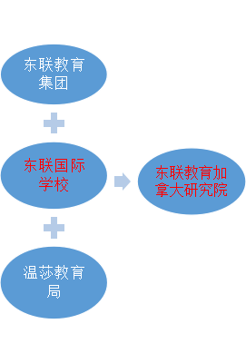
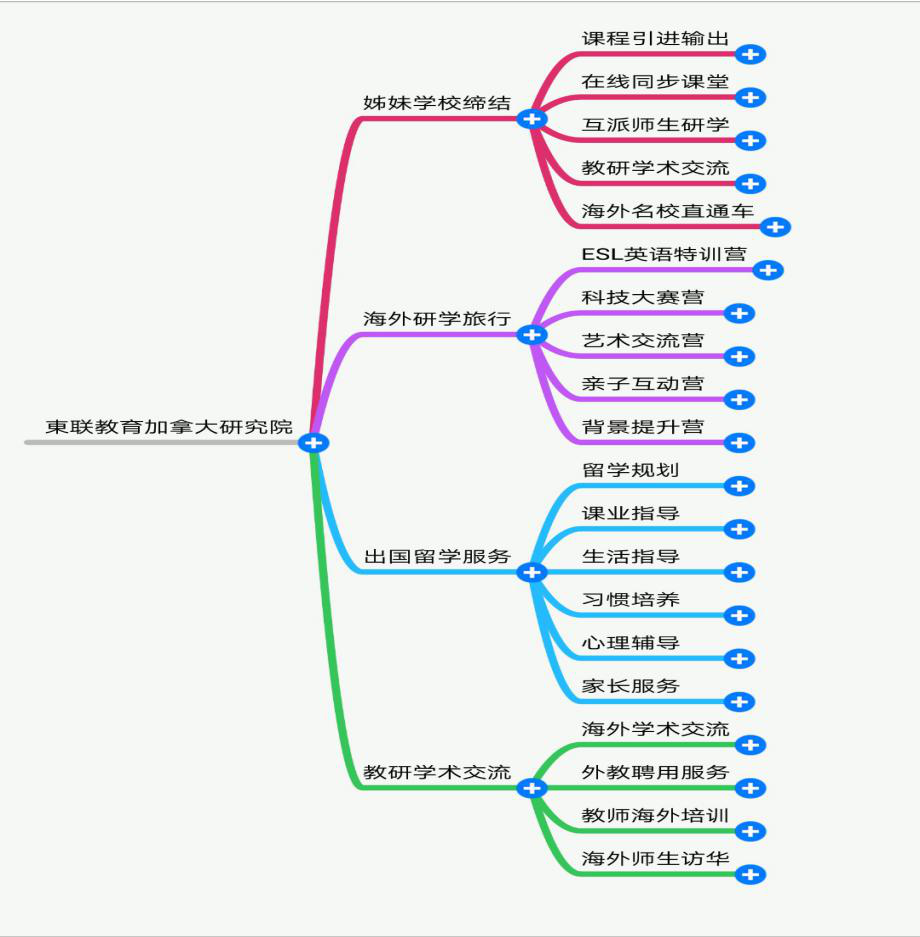
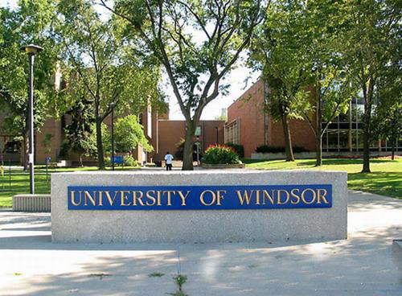
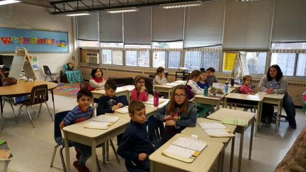

- 简介
- 下属研究院
加拿大研究院
东联教育加大拿研究院是由东联教育（证券代码：831398）和加拿大温莎教育局共同发起成立的学术研究和主管机构。研究院汇集了众多国内外教育专家，专注国际教育研究与实践，立足优秀中华文化，研究、借鉴、融合先进的国际教育经验，通过国际名校直通车、国际研学、专业学科交流、教育考察等国际教育服务形式，开创具有中国气质，世界格局的现代化教育之路，培养具有中国底蕴的世界公民。
◎组织机构：
东联教育加拿大研究院是东联国际学校的学术研究和主管机构。
◎产品架构：
目前已启动的项目介绍
◎1.加拿大温莎大学直通车:
温莎大学直通车是加拿大温莎教育局和温莎大学联合打造，为中国高二学生量身定制的快捷留学项目，无需考试直接录取大学本科，每年限定20个名额，9月和2月入学。
温莎大学直通车微信公众号招生链接：
◎2. 加拿大暑假名城名校+国际优课研学营:

利用暑期组织学生到加拿大东部名城、名校进行参观游学，学习ESL和国际AP课程，提高英语应用水平，体验留学生活，了解世界名校，感受多元文化，开阔国际视野。
暑期名城名校+国际优课研学营微信公众号招生链接：
◎3.加拿大寒假插班生:
国内中学生利用寒假插班进入加拿大公立学校，和当地学生同进行课堂学习，融入真正的英语学习环境，体验北美国际课程，开阔国际视野，为留学打基础。
加拿大寒假插班生微信公众号招生链接：